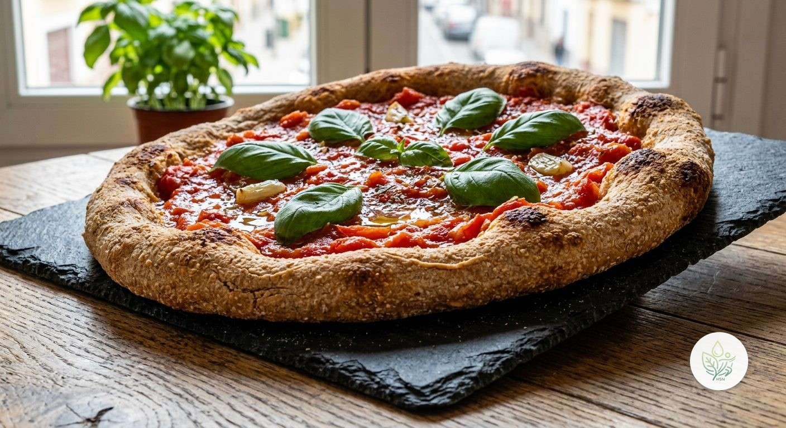

Pizza Saludable
ALa versión integral de la pizza clásica: masa de harina integral fermentada en casa, con tomate y albahaca fresca, sin queso — estilo pizza marinara napolitana. Menos de 4 g de grasa saturada en toda la pizza.
Esta pizza cambia la masa refinada por harina de trigo integral, mucho más rica en fibra, y se hornea con tomate fresco en vez de una salsa comercial con azúcares añadidos. Al no llevar queso, evita la grasa saturada que suele dominar el perfil nutricional de una pizza normal — en este formato sin queso, estilo marinara napolitana, apenas hay grasa saturada en el plato. Si prefieres una versión con queso, puedes añadir mozzarella con moderación, teniendo en cuenta que subirá bastante esa cifra.
Ingredientes (toca el nombre para ver su ficha)
- 250 g
- 5 g
- 150 g
- 20 g
- 200 g
- 5 g
Elaboración
- Disuelve la levadura en el agua templada y deja reposar 5 minutos.
- Mezcla la harina integral con el agua con levadura y el AOVE; amasa hasta conseguir una masa lisa y elástica (unos 8-10 min).
- Forma una bola, tápala y deja fermentar en un lugar cálido 1 hora, hasta que doble su volumen.
- Precalienta el horno a 220°C.
- Estira la masa sobre una bandeja con papel de horno y reparte el tomate triturado con un chorrito de AOVE.
- Hornea 12-15 minutos, hasta que los bordes estén dorados.
- Termina con hojas de albahaca fresca antes de servir.
Información nutricional (receta completa, 2 raciones)
De las grasas, 3.9 g son saturadas · de los carbohidratos, 7.7 g son azúcares · sodio: 27.8 mg
Preguntas frecuentes
¿Cuántas calorías tiene la receta de Pizza Saludable?
Esta receta tiene 1080.2 kcal en total (2 raciones).
¿Es una receta vegana?
Sí, todos los ingredientes son de origen vegetal.
¿Se puede hacer sin gluten?
La harina de trigo integral contiene gluten. Sustitúyela por una mezcla de harinas sin gluten para pizza (arroz, maíz, trigo sarraceno); la fermentación y el amasado pueden variar algo.
¿Puedo añadir queso?
Sí, un poco de mozzarella (unos 75 g para toda la pizza) le da el toque más clásico, aunque subirá la grasa saturada de forma notable — con moderación.